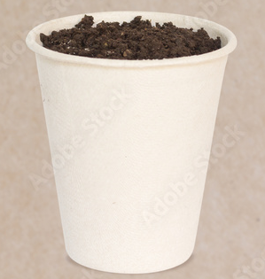

Dirt Cup

Description
a plastic cup filled with dirt from my backyard.
Description
- plastic cup
- little shovel
- dirt from my backyard
Steps
- go to walmart
- buy a plastic cup (alternatively ignore step 1 and look in a trash can at starbucks)
- go to home depot
- go to the little person section
- buy shovel
- drive to my house (very important)
- give me your supplies
- i work my magic
- tada!